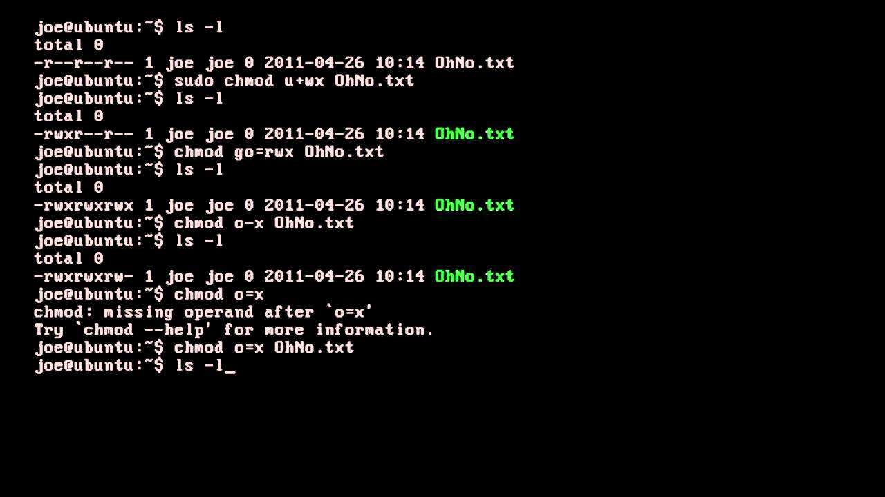
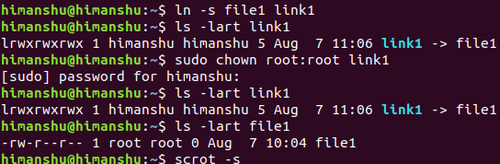
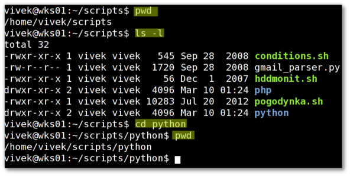

Common Commands
The following are a few LINUX Commands
- pwd - print working directory
- mkdir - make directory
- cd-change directory
- ls-list files
- cp= copy files/folder(s)
- mv - move/rename files/folders
- rm - delete files/folders
- cat = catenate (concatenate) - reads one or more files and prints them.
- chmod- change file`s access permissions(r,w,o)
- chown- change owner of file
The following pictures differentiate the commands, "chmod" and "chown"


This is an example of an user inputting a few commands to show the files in the directory.
